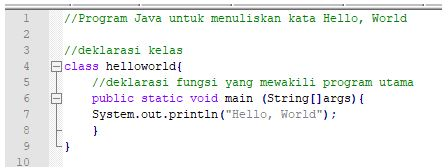
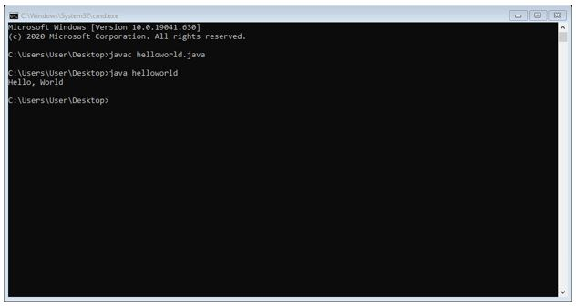

JAVA
Pada tahun 1991,bahasa pemrograman Java terlahir dari The Green Project, yang berjalan selama 18 bulan.
Proyek tersebut belum menggunakan versi yang dinamakan Oak. Proyek ini dimotori oleh Patrick Naughton,
Mike Sheridan, dan James Gosling, beserta sembilan pemrogram lainnya dari Sun Microsystems.
Java adalah sebuah bahasa pemrograman dasar dalam sebuah pembuatan aplikasi.
Java dikenal memiliki moto “Write Once, Run Anywhere”. Hal ini menunjukkan bahwa setiap kode program yang
ditulis menggunakan Java bisa langsung dijalankan pada platform berbeda-beda tanpa perlu menyusun ulang.
Karakteristik Java
- Sederhana : Bahasa pemrograman Java menggunakan sintaks mirip dengan C++ namun sintaks pada Java telah banyak diperbaiki .
- Berorientasi objek (Object Oriented) : Java mengunakan pemrograman berorientasi objek yang membuat program dapat dibuat secara modular dan dapat dipergunakan kembali.
- Dapat didistribusi dengan mudah : Java dibuat untuk membuat aplikasi terdistribusi secara mudah dengan adanya libraries networking yang terintegrasi pada Java.
- Interpreter : Source code Java yang telah dikompilasi menjadi Java bytecodes dapat dijalankan pada platform yang berbeda-beda.
- Robust : Compiler pada Java mempunyai kemampuan mendeteksi error secara lebih teliti dibandingkan Bahasa pemrograman lain. Java mempunyai runtime-Exception handling untuk membantu mengatasi error pada pemrograman.
- Aman : Sebagai bahasa pemrograman untuk aplikasi internet dan terdistribusi, Java memiliki beberapa mekanisme keamanan untuk menjaga aplikasi tidak digunakan untuk merusak sistem komputer yang menjalankan aplikasi tersebut.
- Architecture Neutral Program Java merupakan platform independent. Artinya,program cukup mempunyai satu buah versi yang dapat dijalankan pada platform yang berbeda dengan Java Virtual Machine.
- Portabel Source code maupun program Java dapat dengan mudah dibawa ke platform yang berbeda-beda tanpa harus dikompilasi ulang.
- Performance Performance pada Java sering dikatakan kurang tinggi. Namun performance Java dapat ditingkatkan menggunakan kompilasi Java lain seperti buatan Inprise,Microsoft ataupun Symantec yang menggunakan Just In Time Compilers (JIT).
TIPE DATA JAVA
- Char : Tipe data karakter
- Integer : angka atau bilangan bulat
- Float : bilangan desimal
- Double : bilangan desimal juga, tapi lebih besar kapasistanya
- String : kumpulan dari karakter yang membentuk teks
- Boolean : tipe data yang hanya bernilai true dan false
STRUKTUR + CONTOH PROGRAM JAVA
